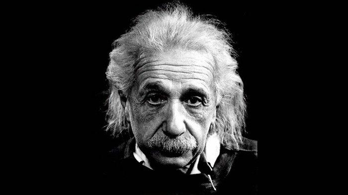
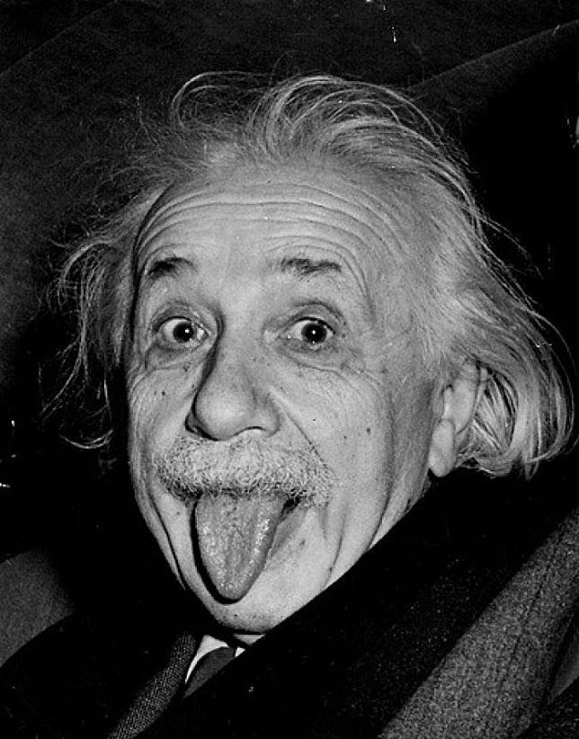

Albert Einstein
Jerman, 14 Maret 1879
 Einstein telah mendapatkan banyak sekali kesuksesan yang berhasil diraih sebagai ilmuwan fisika, hingga pada akhirnya Albert Einstein menutup matanya untuk selama – lamanya pada tanggal 17 April 1955, karena pendarahan hebat akibat dari pecahnya suatu aneurisme aorta perut. Selama proses outopsi, para ahli patologi dari Rumah Sakit, yakni Princeton Thomas Stoltz Harvey mengambil otak Albert Einstein untuk proses pengawetan dan hal tersebut ternyata dilakukannya tanpa mendapatkan ijin dari keluarga.
Einstein telah mendapatkan banyak sekali kesuksesan yang berhasil diraih sebagai ilmuwan fisika, hingga pada akhirnya Albert Einstein menutup matanya untuk selama – lamanya pada tanggal 17 April 1955, karena pendarahan hebat akibat dari pecahnya suatu aneurisme aorta perut. Selama proses outopsi, para ahli patologi dari Rumah Sakit, yakni Princeton Thomas Stoltz Harvey mengambil otak Albert Einstein untuk proses pengawetan dan hal tersebut ternyata dilakukannya tanpa mendapatkan ijin dari keluarga.